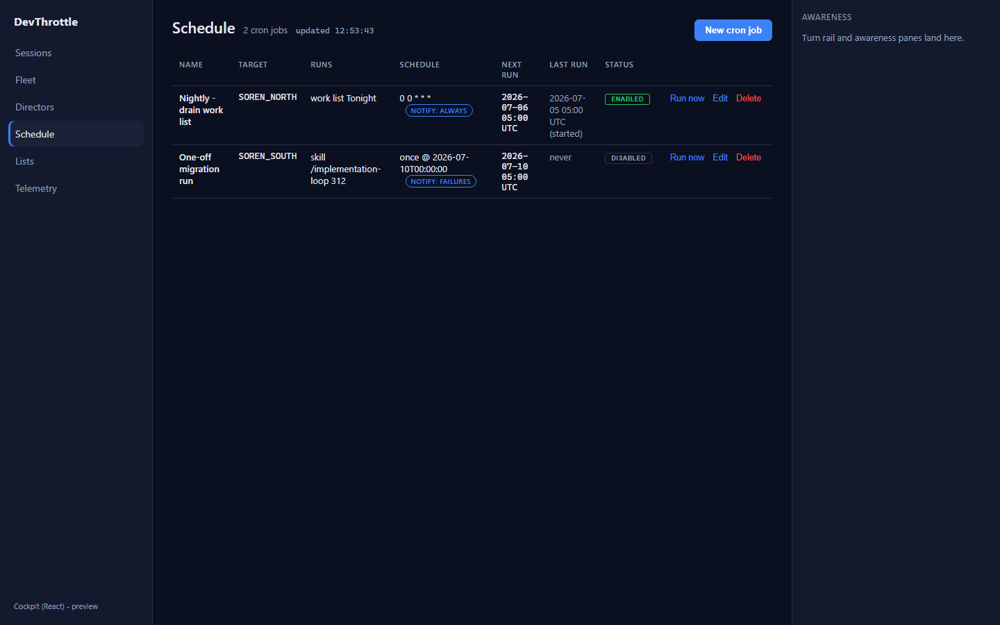
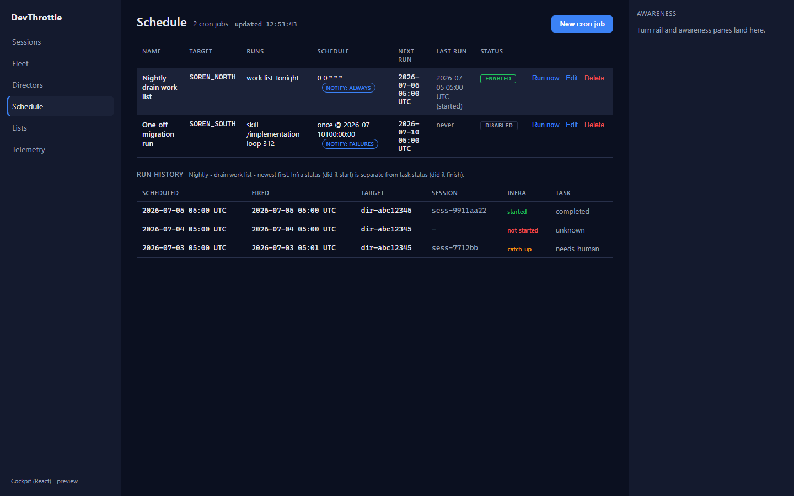
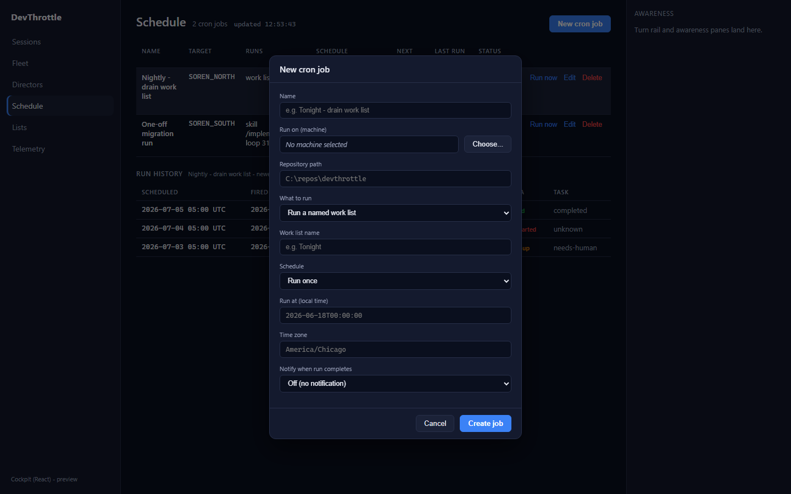
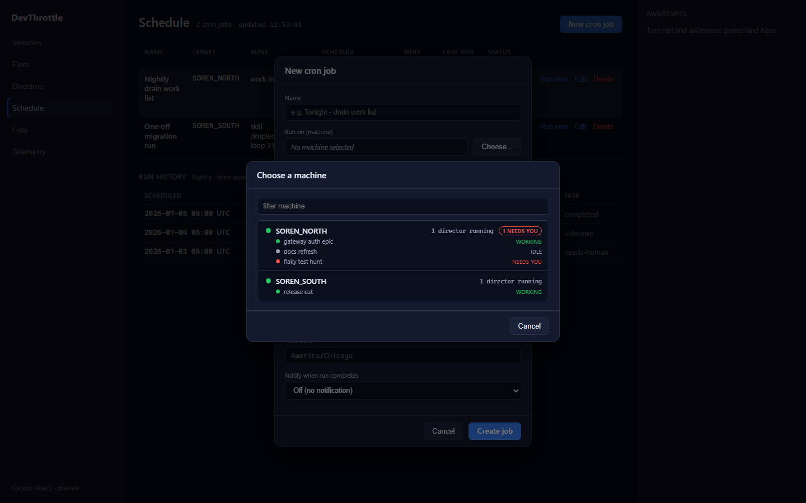
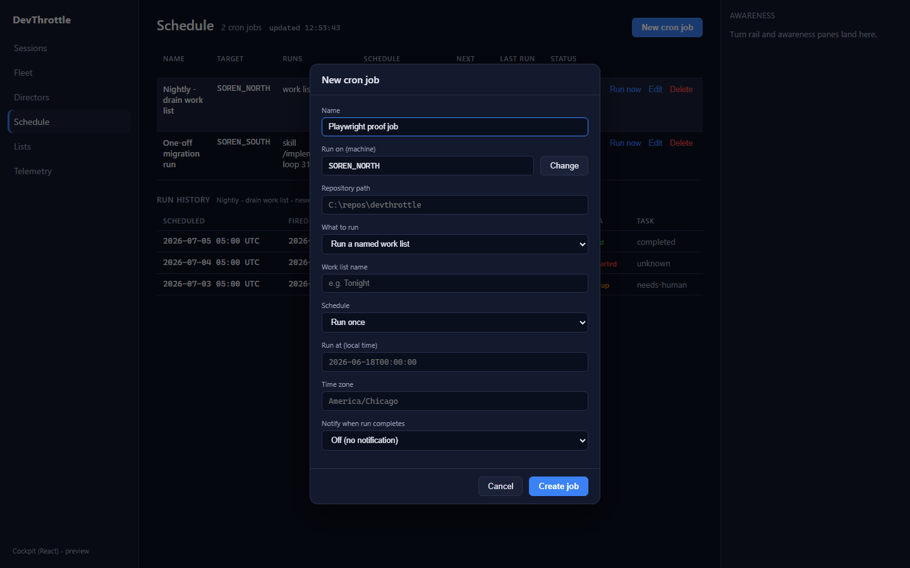
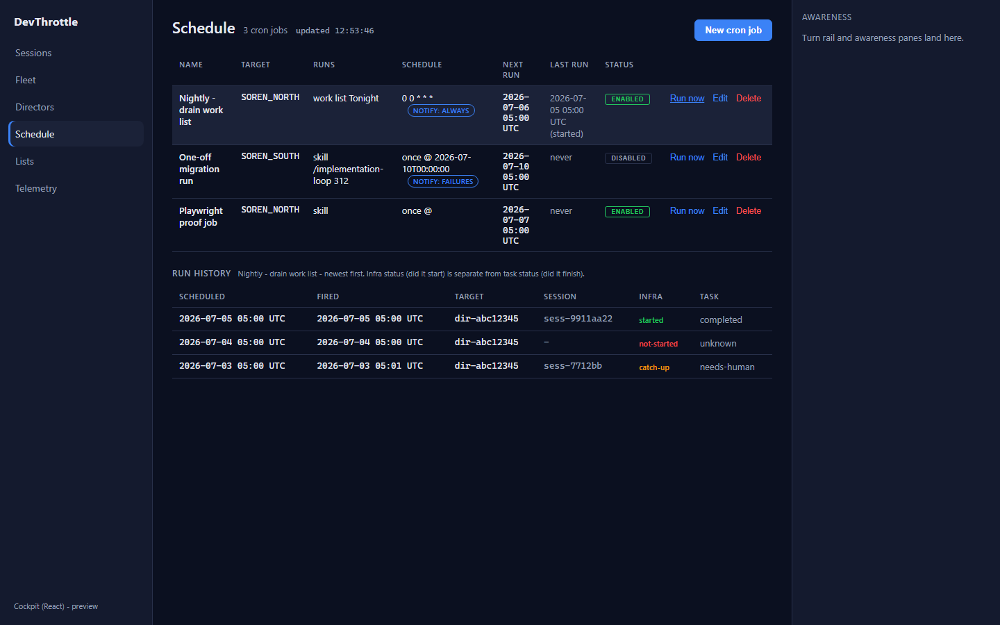
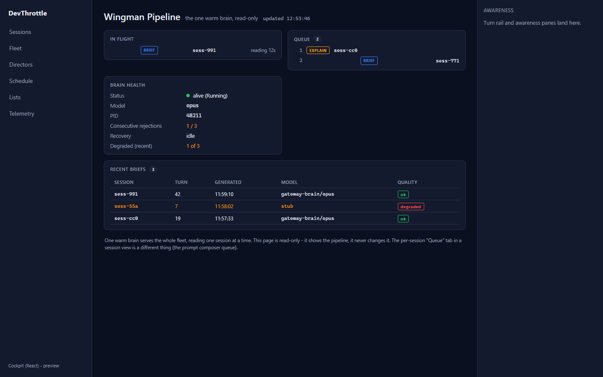
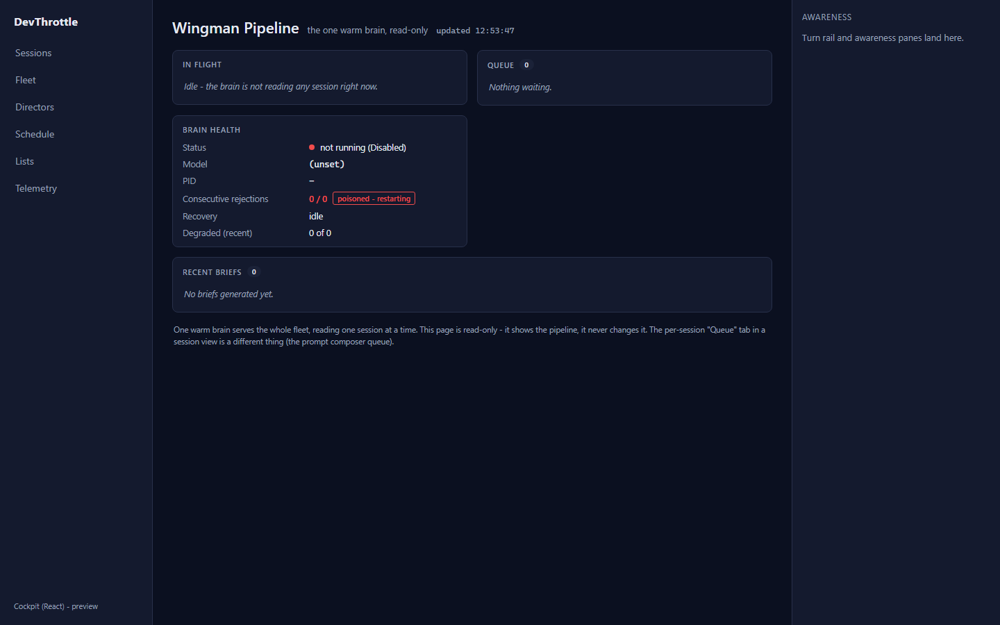

Issue #976 - Cockpit React: port Schedule + the Wingman queue
Part of epic #967 (rebuild the Cockpit in React). One-to-one port of the Blazor
Schedule.razor (+ Schedule.razor.css) and WingmanQueue.razor
into the apps/cockpit React desktop shell, reading and writing same-origin through the
Gateway and reusing client-core.
What was implemented
- Schedule client (
packages/client-core/src/schedule/scheduleClient.ts) - typed, same-origin, root-relative helpers for the whole/cron/jobssurface:getCronJobs(unwraps{ jobs }),createCronJob(POST, 201),updateCronJob(PUT),deleteCronJob(DELETE),runCronJobNow(POST .../run), andgetCronRuns(unwraps{ runs }). Non-2xx surfaces the Gateway's own{ error }message (a 400 for an invalid cron, a 409 overlap) so the form shows the real reason. Narrow localCronJob/CronJobTarget/CronJobAction/CronRunRecordtypes mirror the C# DTOs (the cron endpoints are not in the generated OpenAPI schema). - Wingman-queue client (
packages/client-core/src/wingman/queueClient.ts) -getWingmanQueuereads the read-onlyGET /wingman/queuesnapshot into theWingmanQueueSnapshotfamily (in-flight / queue / recent / brain health), with every field defaulted so the honest idle "Disabled" snapshot current Gateways return still parses. - Schedule page (
apps/cockpit/src/schedule/ScheduleView.tsx, route/schedule) - the job table (name, target machine, runs, cron/one-off schedule with the run-complete notify badge, next/last run, the enabled/disabled toggle chip, and Run now / Edit / Delete), the selected job's run history (with the separate infra-status vs task-status columns and color-coded infra states), and the create/edit modal with its own roomy Director (machine) picker dialog (live per-machine session preview, #495). Polls every 5s; a create/edit/toggle/delete/run-now all go through client-core to the Gateway. - Wingman Pipeline page (
apps/cockpit/src/wingman/WingmanQueueView.tsx, route/wingman) - the read-only pipeline: in-flight session, the ordered queue with brief/explain kind badges, brain health (status dot, model, pid, the poisoned-brain rejection counter honestly shown asn / threshold, recovery, degraded count), and the recent-briefs table with degraded highlighting. Polls every 3s. No control mutates queue state (read-only by design). - Wiring: routes + theme-token stylesheets (
schedule/schedule.css,wingman/wingman.css) added inmain.tsx;/cronand/wingmanadded to the dev-server proxy invite.config.ts. Wingman has no left-rail nav entry - mirroring the Blazor nav, which hides both Schedule and Wingman from the v1 default view and reaches them by direct route.
Acceptance criteria - met with proof
| Criterion | How it is met | Proof |
|---|---|---|
| Schedule renders the same information and supports the same actions as the Blazor page. | Job table (target machine, runs, schedule, notify badge, next/last run, enabled chip), run history with infra/task split, and the full create/edit modal + machine picker with live session preview. New job / Edit / Delete / Run now / toggle enabled all wired to the Gateway. | schedule-list.png, schedule-run-history.png,
schedule-create-modal.png, schedule-machine-picker.png,
schedule-form-filled.png, schedule-after-create.png,
schedule-run-now.png |
| The Wingman queue renders the same information as the Blazor page. | In-flight, queue (brief/explain badges + positions), brain health (rejections n/threshold, recovery, degraded count), recent briefs table with degraded highlighting; plus the honest idle "Disabled" state current Gateways return. | wingman-pipeline.png (populated), wingman-disabled.png (idle) |
| The Blazor paths can flip to React with no loss of function. | Same /cron/jobs and /wingman/queue endpoints, same envelope
unwrapping, same display vocabulary and actions; the React pages coexist under /c
alongside the Blazor pages at /schedule / /wingman. |
All screenshots below. |
| No absolute URLs in the client (lint rule passes). | Every request is root-relative through client-core; the dev proxy target is read
from the environment, never hard-coded. |
npm run lint exit 0 (see Build gate). |
Build gate (all clean)
npm run build --workspace @devthrottle/cockpit(tsc --noEmit + vite build): PASSnpm run lint(Gateway-only-ingress rule, no absolute URLs): PASS (exit 0)dotnet build src/CcDirector.Gateway/CcDirector.Gateway.csproj -p:RunCockpitBuild=true -c Release(builds + stages the React Cockpit): Build succeeded, 0 Warning(s), 0 Error(s)dotnet build cc-director.sln: Build succeeded, 0 Warning(s), 0 Error(s)
Note: the workspace-wide npm run typecheck reports a pre-existing failure in
packages/client-core/src/awareness/awarenessClient.test.ts (a #974 test file this issue
does not touch); it reproduces on pristine origin/main and is unrelated to this change.
Both new client-core modules typecheck clean (the cockpit tsc --noEmit build imports and
checks them).
How this was proven
Driven against the real built React pages via the Vite dev server and Playwright. Every
Gateway request was intercepted and answered with canned fleet data - the isolated backend - so
no real Gateway, Director, or schedule was ever touched (the mutation-isolation rule). The
canned data exercises every information element and action: the create flow's POST /cron/jobs
and the Run-now POST /cron/jobs/{id}/run were both captured by the isolated backend
(see capture-summary.json: 1 create, 1 run). The Wingman page is read-only, shown both
populated and in the honest idle "Disabled" state.
Screenshots








CenCon impact
No architecture or security drift. This is a client-side port over the existing Gateway REST
surface (/cron/jobs, /wingman/queue); no new endpoints, no new server logic,
no change to any blocking security rule. The Gateway-only-ingress invariant is preserved (all
requests root-relative, enforced by the lint rule).